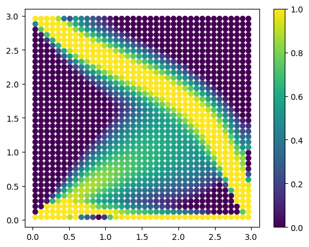

Tutorial: topology optimization using pyfe3d#
Date: 14 of October 2024
Author: Saullo G. P. Castro
Cite this tutorial as:
Castro, SGP (2024). General-purpose finite element solver based on Python and Cython (Version 0.5.0). Zenodo. DOI: https://doi.org/10.5281/zenodo.6573489.
Importing Python modules#
[1]:
import numpy as np
from numpy import isclose
from scipy.sparse.linalg import cg
from scipy.sparse import coo_matrix
from scipy.optimize import minimize
from pyfe3d.shellprop_utils import isotropic_plate
from pyfe3d import Quad4R, Quad4RData, Quad4RProbe, INT, DOUBLE, DOF
Creating mesh#
[2]:
data = Quad4RData()
probe = Quad4RProbe()
nx = 39
ny = 39
N = DOF*nx*ny
a = 3.0
b = 3.0
c = 3
E0 = 203.e9 # Pa
nu = 0.33
h = 0.003 # m
xtmp = np.linspace(0, a, nx)
ytmp = np.linspace(0, b, ny)
xmesh, ymesh = np.meshgrid(xtmp, ytmp)
ncoords = np.vstack((xmesh.T.flatten(), ymesh.T.flatten(), np.zeros_like(ymesh.T.flatten()))).T
x = ncoords[:, 0]
y = ncoords[:, 1]
z = ncoords[:, 2]
ncoords_flatten = ncoords.flatten()
nids = 1 + np.arange(ncoords.shape[0])
nid_pos = dict(zip(nids, np.arange(len(nids))))
nids_mesh = nids.reshape(nx, ny)
n1s = nids_mesh[:-1, :-1].flatten()
n2s = nids_mesh[1:, :-1].flatten()
n3s = nids_mesh[1:, 1:].flatten()
n4s = nids_mesh[:-1, 1:].flatten()
num_elements = len(n1s)
print('# number of elements', num_elements)
nodes = list(zip(n1s, n2s, n3s, n4s))
# number of elements 1444
Calculate the stiffness matrix for a vector of design variables “rho”#
The Young moduli of every element is calculated using the power law: \(E=\rho^c E_0\), where \(E_0\) is the original Young modulus.
[3]:
def calc_K(rho):
E = rho**c*E0
KC0r = np.zeros(data.KC0_SPARSE_SIZE*num_elements, dtype=INT)
KC0c = np.zeros(data.KC0_SPARSE_SIZE*num_elements, dtype=INT)
KC0v = np.zeros(data.KC0_SPARSE_SIZE*num_elements, dtype=DOUBLE)
quads = []
init_k_KC0 = 0
i = 0
for n1, n2, n3, n4 in zip(n1s, n2s, n3s, n4s):
prop = isotropic_plate(thickness=h, E=E[i], nu=nu, calc_scf=True)
i += 1
pos1 = nid_pos[n1]
pos2 = nid_pos[n2]
pos3 = nid_pos[n3]
pos4 = nid_pos[n4]
r1 = ncoords[pos1]
r2 = ncoords[pos2]
r3 = ncoords[pos3]
normal = np.cross(r2 - r1, r3 - r2)[2]
assert normal > 0
quad = Quad4R(probe)
quad.n1 = n1
quad.n2 = n2
quad.n3 = n3
quad.n4 = n4
quad.c1 = DOF*nid_pos[n1]
quad.c2 = DOF*nid_pos[n2]
quad.c3 = DOF*nid_pos[n3]
quad.c4 = DOF*nid_pos[n4]
quad.init_k_KC0 = init_k_KC0
quad.update_rotation_matrix(ncoords_flatten)
quad.update_probe_xe(ncoords_flatten)
quad.update_KC0(KC0r, KC0c, KC0v, prop)
quads.append(quad)
init_k_KC0 += data.KC0_SPARSE_SIZE
KC0 = coo_matrix((KC0v, (KC0r, KC0c)), shape=(N, N)).tocsc()
return KC0
Sensitivity of the stiffness matrix with respect to the vector “rho”#
The local support of \(\rho_i\) in vector \(\vec{\rho} = \{\rho_1, \rho_2, \dots, \rho_i, \dots, \rho_N\}\) makes it easy to calculate the sensitivity.
\[\frac{\partial E}{\partial \rho}\big\rvert_i = c \rho_i^{c-1} E_0\]
[4]:
def dKdrho(rho, i):
dEdrho = c*rho[i]**(c-1)*E0
prop = isotropic_plate(thickness=h, E=dEdrho, nu=nu, calc_scf=True)
KC0r = np.zeros(1*data.KC0_SPARSE_SIZE, dtype=INT)
KC0c = np.zeros(1*data.KC0_SPARSE_SIZE, dtype=INT)
KC0v = np.zeros(1*data.KC0_SPARSE_SIZE, dtype=DOUBLE)
n1, n2, n3, n4 = nodes[i]
pos1 = nid_pos[n1]
pos2 = nid_pos[n2]
pos3 = nid_pos[n3]
pos4 = nid_pos[n4]
r1 = ncoords[pos1]
r2 = ncoords[pos2]
r3 = ncoords[pos3]
normal = np.cross(r2 - r1, r3 - r2)[2]
assert normal > 0
quad = Quad4R(probe)
quad.n1 = n1
quad.n2 = n2
quad.n3 = n3
quad.n4 = n4
quad.c1 = DOF*nid_pos[n1]
quad.c2 = DOF*nid_pos[n2]
quad.c3 = DOF*nid_pos[n3]
quad.c4 = DOF*nid_pos[n4]
quad.init_k_KC0 = 0
quad.update_rotation_matrix(ncoords_flatten)
quad.update_probe_xe(ncoords_flatten)
quad.update_KC0(KC0r, KC0c, KC0v, prop)
KC0 = coo_matrix((KC0v, (KC0r, KC0c)), shape=(N, N)).tocsc()
return KC0
Applying boundary conditions and forces#
[5]:
bk = np.zeros(N, dtype=bool)
check = isclose(x, 0) & (isclose(y, 0.) | isclose(y, b))
bk[0::DOF] = check
bk[1::DOF] = check
# making it a 2D membrane problem
bk[2::DOF] = True
bk[3::DOF] = True
bk[4::DOF] = True
bu = ~bk
# applying load along u at x=a
# nodes at vertices get 1/2 of the force
fext = np.zeros(N)
ftotal = -1000.
print('ftotal', ftotal)
# at x=0
check = isclose(x, a) & isclose(y, 0)
fext[1::DOF][check] = ftotal
ftotal -1000.0
Performing topology optimization#
[6]:
uu = None
K = None
def jac(rho):
"""Adjoint gradient of the compliance with respect to each density in 'rho'
"""
global uu, K
# K = calc_K(rho=rho)
# Kuu = K[bu, :][:, bu]
u = np.zeros(N)
# PREC = np.max(1/Kuu.diagonal())
# uu, info = cg(PREC*Kuu, PREC*fext[bu], atol=1e-3)
u[bu] = uu
dCdrho = np.zeros(num_elements)
for i in range(num_elements):
dCdrho[i] = - u.T @ dKdrho(rho, i) @ u
return dCdrho
def rel_volume(rho):
target_rel_volume = 0.4
constr = target_rel_volume - np.sum(rho)/num_elements
return constr
def objective(rho):
global uu, K
K = calc_K(rho)
Kuu = K[bu, :][:, bu]
PREC = np.max(1/Kuu.diagonal())
uu, info = cg(PREC*Kuu, PREC*fext[bu], atol=1e-3)
compl = uu.T @ Kuu @ uu
print('# obj', compl)
return compl
constraints = [
{'type': 'ineq', 'fun': rel_volume},
]
bounds = [[1.e-6, 1.] for _ in range(num_elements)]
rho = np.ones(num_elements)
topopt = minimize(objective, rho, jac=jac, method='SLSQP',
constraints=constraints, bounds=bounds)
# obj 0.03656858898675277
# obj 0.5547638094651913
# obj 0.35106069976731524
# obj 0.3215979475255099
# obj 0.26155065221967616
# obj 0.2447341311076434
# obj 0.22158155519550016
# obj 0.2110542607798679
# obj 0.20017326095359275
# obj 0.1899385104265735
# obj 0.18559066078665587
# obj 0.17579991247268809
# obj 0.1695368390646748
# obj 0.16614085821270308
# obj 0.16067894839400845
# obj 0.15745805351723577
# obj 0.1543229529344281
# obj 0.14997568672655667
# obj 0.14805508446344015
# obj 0.1443873346907818
# obj 0.1420002577011633
# obj 0.1387533680825178
# obj 0.13659894670685266
# obj 0.1336785942032554
# obj 0.1302100407756137
# obj 0.12576457530613608
# obj 0.12055160240888262
# obj 0.11620300114017221
# obj 0.11263125359507889
/Users/saullogiovanip/miniconda3/lib/python3.12/site-packages/scipy/optimize/_slsqp_py.py:434: RuntimeWarning: Values in x were outside bounds during a minimize step, clipping to bounds
fx = wrapped_fun(x)
# obj 0.11144236537240935
/Users/saullogiovanip/miniconda3/lib/python3.12/site-packages/scipy/optimize/_slsqp_py.py:438: RuntimeWarning: Values in x were outside bounds during a minimize step, clipping to bounds
g = append(wrapped_grad(x), 0.0)
/Users/saullogiovanip/miniconda3/lib/python3.12/site-packages/scipy/optimize/_slsqp_py.py:498: RuntimeWarning: Values in x were outside bounds during a minimize step, clipping to bounds
a_ieq = vstack([con['jac'](x, *con['args'])
# obj 0.1093976103320863
# obj 0.10641891141655721
# obj 0.10528727474306264
# obj 0.10298874900519467
# obj 0.1007075298824823
# obj 0.09893335389752553
# obj 0.09774328677980391
# obj 0.09603914335961679
# obj 0.09477669903683783
# obj 0.0933967618079123
# obj 0.09213737826774447
# obj 0.09103602206543925
# obj 0.08992870637624946
# obj 0.08876037150415103
# obj 0.08761904956984673
# obj 0.08676634286601623
# obj 0.08586449260199747
# obj 0.08463077613202426
# obj 0.08368662929320665
# obj 0.08274835885449637
# obj 0.08183925637394532
# obj 0.0810026586568174
# obj 0.07992119435209558
# obj 0.07887065589514056
# obj 0.07808017107093869
# obj 0.07737506257498095
# obj 0.07671351488737689
# obj 0.07580524529586612
# obj 0.07490326203365288
# obj 0.0741322844147335
# obj 0.07333014135170007
# obj 0.07272968991453943
# obj 0.07221843513446832
# obj 0.07179850909572436
# obj 0.07134393524717482
# obj 0.07054215800944728
# obj 0.07010145418080924
# obj 0.0695357918453487
# obj 0.06910654031075446
# obj 0.06868069049809973
# obj 0.06835049872745673
# obj 0.06796273315002309
# obj 0.06756604867367567
# obj 0.06704438597089588
# obj 0.06655132368916959
# obj 0.0662428799388423
# obj 0.06577538774620953
# obj 0.06537434481286232
# obj 0.06503839635940929
# obj 0.06472260842541358
# obj 0.0643952744313543
# obj 0.06411250516329453
# obj 0.06389062591491629
# obj 0.06371647857097114
# obj 0.06351433452917071
# obj 0.06331996038445666
# obj 0.06305710309293343
# obj 0.06285521671617096
# obj 0.06264059770003866
# obj 0.06240530621406128
# obj 0.0622018210575791
# obj 0.061958487925665655
# obj 0.06170946050663415
# obj 0.06146190725572331
# obj 0.06123275687579674
# obj 0.06100521185653299
# obj 0.0608189804290589
# obj 0.06062682961043829
# obj 0.06047445116501475
# obj 0.060249869402383985
Checking the result of the topology optimization#
[7]:
import matplotlib
import matplotlib.pyplot as plt
import matplotlib.cm as cm
xcg = np.zeros((num_elements, 3))
i = 0
for n1, n2, n3, n4 in zip(n1s, n2s, n3s, n4s):
pos1 = nid_pos[n1]
pos2 = nid_pos[n2]
pos3 = nid_pos[n3]
pos4 = nid_pos[n4]
r1 = ncoords[pos1]
r2 = ncoords[pos2]
r3 = ncoords[pos3]
r4 = ncoords[pos4]
xcg[i] = (r1 + r2 + r3 + r4)/4
i += 1
plt.clf()
plt.scatter(xcg[:, 0], xcg[:, 1], c=topopt.x, vmin=0, vmax=1)
plt.colorbar()
plt.show()

[ ]: